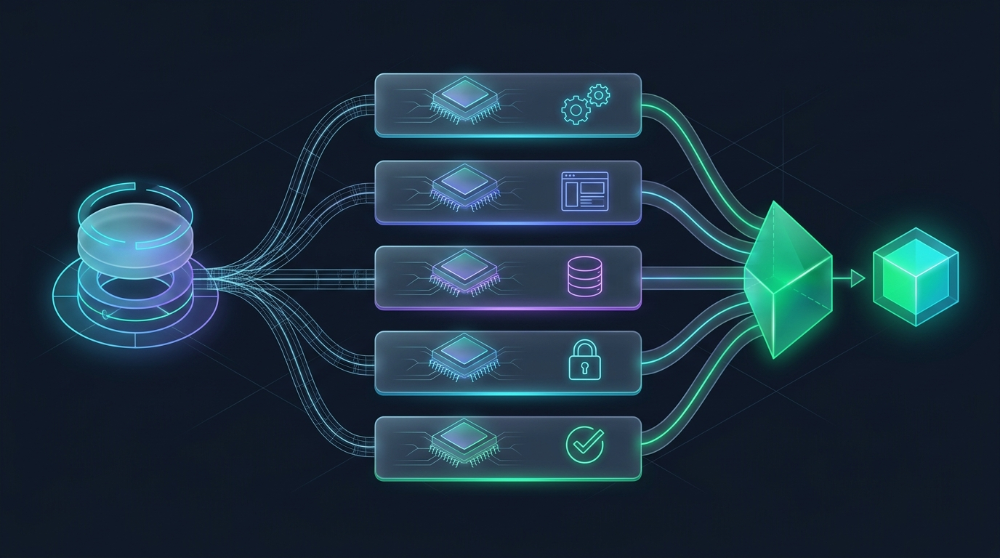
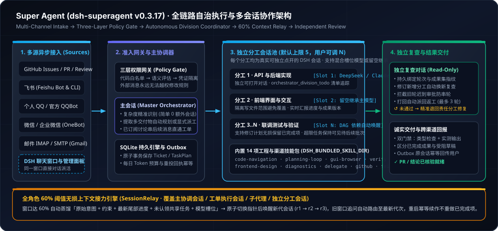

チャット・外部チャネル・バックグラウンドチケットを統合するマルチセッション開発エージェント
メイン会話から複雑な開発タスクを投入し、独立して開ける複数分担セッションとスロット別モデルで並列処理。コード項目の強制テスト検証・独立レビュー・60% 無損失コンテキストリレー・Outbox 厳格同期・PID 認識クラッシュ復旧を一貫統合します。

7チャネル受信＆3層コードゲート
DSH チャット、GitHub、Feishu、個人 QQ、公式 QQBot、WeChat、WeCom、IMAP/SMTP メール（Gmail 対応）を統合。コード許可リスト・意味評価・限定資格情報で外部メッセージの権限昇格を防ぎます。
柔軟な分担セッション＆異種モデル
既定で最大 5 つの独立分担セッション（上限撤廃・ページング・スパース保存対応）。スロット別のモデル指定や開始ウィンドウからの厳格継承、メンバー間の直接連携と動的引き受けに対応します。
コード強制テスト＆独立レビュー
コード作業項目の手動検収バイパスを禁止し、納品版に対応するテスト証跡を必須化。独立レビュー有効時は作成者の自己承認を防ぎ、最大 3 ラウンドの差し戻しを実行します。
60% リレー＆強制終了即時復旧
全役割が 60% 到達で新世代セッション（r1→r2→r3）へ引き継ぎ。ドラフト状態を Outbox 受領結果に厳格同期し、v0.4.0 の PID 認識ロックが稼働インスタンスを保護しつつ Windows 強制終了後 0 秒で復旧します。
タスクから始める並列協調
DSH ワークスペースで Super Agent プリセットを選ぶと、複雑な依頼は同一サイドバーで個別に開ける分担会話に展開され、単純な依頼は追加セッションなしでそのまま完了します。

アーキテクチャ＆コンテキストリレー

はじめに
ドキュメント目次
v0.4.0 概要
| 項目 | 内容 |
|---|---|
| 配布形態 | ワンライナー（install.ps1 / install.sh） / 単体プラグイン（.tgz） / Node+DSH 同梱 4 プラットフォーム版（.zip） |
| 分担セッション | 既定 5（同一ワークスペースに独立表示・上限撤廃・全ページ到達＆スパース保存・開始ウィンドウのモデルを厳格継承） |
| 検証と協調機能 | コード系作業項目の manual_acceptance を全経路で拒否；メンバー直接通信・動的タスク引き受け・オーナーマージ・独立レビュー回避 |
| 配信＆クラッシュ復旧 | SpeculativeDraft を Outbox 受領結果に厳格同期；v0.4.0 の PID 認識ロックが稼働インスタンスを保護し Windows 強制終了後 0s/5s/35s/60s で安全復旧 |
| 並行数＆リレー | 既定 3 チケット + 人間の追撃用に 1 枠を予約；全役割で 60% 到達時に世代交代リレー（r1 → r2 → r3） |
| レビュー＆測定 | 最大 3 ラウンドの独立レビュー + 内蔵 14 スキル + orchestrator_division_todo + scripts/benchmark-throughput.mjs |
| 品質検証 | Windows Vitest 1,380 件合格（0 失敗、15 件 POSIX スキップ）；Linux CI Vitest 1,393 件合格（0 失敗、2 件スキップ）；独立検収 37/37 件；厳格バンドル検証 0 スキップ；プリフライト 0 件 |
| 出自とライセンス | deepseek-ai/dsh-superagent-prototype を基盤にコミュニティ保守 · MIT License |
検証範囲の明示：クロスプラットフォーム自動テスト、セキュリティ検査、Windows 隔離パッケージ全周期（新規導入・無損失アップグレード・稼働ロック保護・強制終了 0/5/35/60 秒復旧）を検証済みです。実商用モデルでのスループット、外部 7 チャネルの実アカウント送受信、Linux / macOS 実機デスクトップ起動は各実環境でご確認ください。